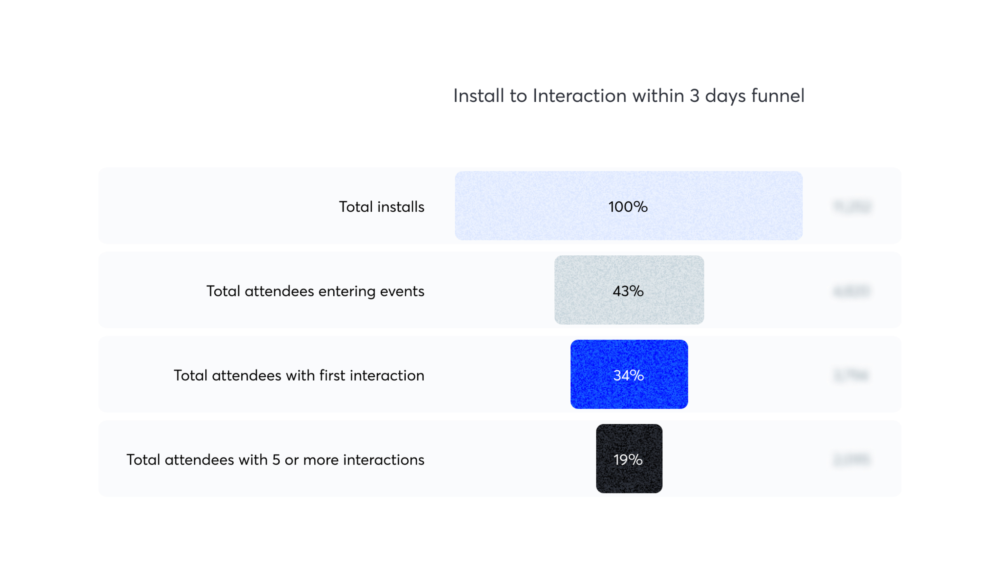
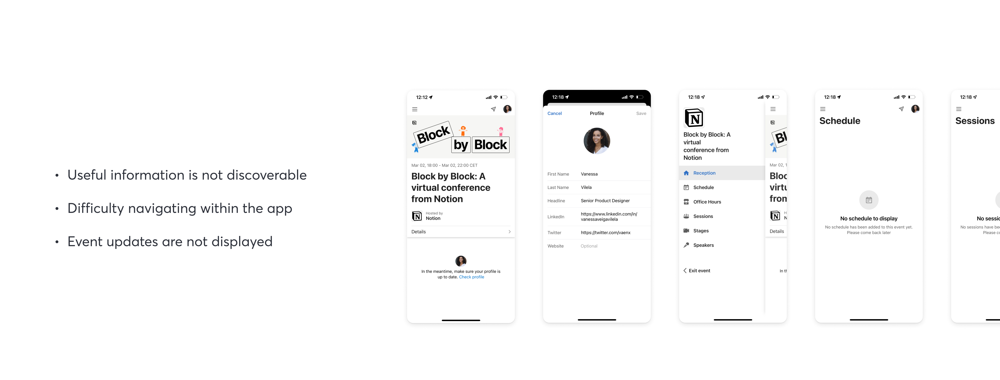
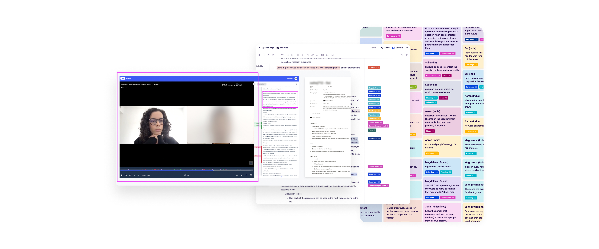
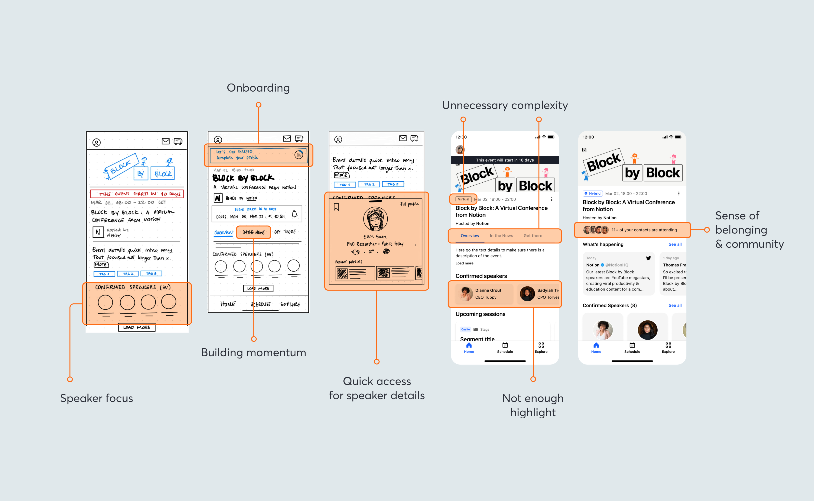
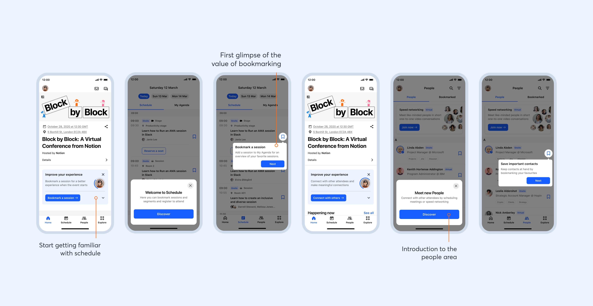
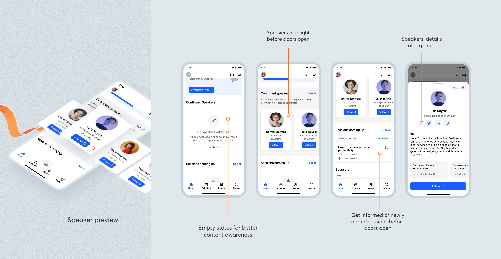

Hopin's Mobile App Reception
The team
I participated as the Lead Designer in this project, in a team of 1 PM, 1 EM, 1 Data Analyst and 8 Engineers (4 Android, 4 iOS). Additionally various internal stakeholders cross-pods have been involved, ranging from Product Managers to Researchers, Designers and Engineering Managers.
My role
I owned the research and design process, end-to-end: from setting up the research plan, interviewing people and extracting insights, to designing and prototyping the Mobile App reception area. Due to many dependencies across the whole product (web and mobile app), I led the effort of connecting and establishing a relationship with relevant stakeholders across the company, resulting in a cross-team collaboration with PMs, Researchers, Data Analysts, and Product Designers.
Problem
Before an event actually starts, the app’s offering is quite limited, allowing attendees to visit and edit some of their profile details only. The space for improvement in this area is highlighted by the data around first interactions. In fact, altough people install the app, only 34% accomplish a first interaction*, taking them an average of 200 minutes to do it.

Essentially 70% of the people downloading the app were not engaging with a first interaction. We had some ideas to why this might be happening. Information discoverability was low, and we were still relying on a hamburguer menu which was hiding all the main app offerings; additionally, there was also a lack of updates regarding the event itself, namely when information would become available. The app was still in its infancy and being iterated upon, but when people would land in the event's reception before the event started—and therefore with no information available—, they would only be prompted to fill in their profiles, which was also very limited in its editing capabilities. Regarding the rest of the main areas of the app, such as Schedule or Sessions, where people would expect to find relevant details, there would be no updates or indication of when it would become available.

Generative Research
In order to validate those assumptions I did some generative research, trying to keep it open to really understand what struggles people would have. I interviewed people and was later able extract some relevant insights. I got to learn that attendees spend nearly 1 hour online searching for more information about the speaker, so they decide whether to attend a session or not. I also validated the assumption that people did want to meet like minded folks, but was surprised to learn that they were not interested in meeting new people before the event started…

First Explorations
The first explorations included a bigger focus on the speakers, an introduction to the idea of an onboarding progression bar, and even an intention to build momentum through a news feed. There was also the idea of exploring a community sense of belonging through showing you other people attending that you might know.

An Onboarding Experience
In order to introduce people to value, the idea of an onboarding checklist was explored, to start showcasing the main value propositions of the app. People would be prompted to fill in their profile so that it would start tailoring their experience and help them be better identified by others, by adding a picture, defining interests and adding their headline. The goal with it would be to start the basis for a more tailored experience, so that in the future we would be able to rely on people’s online interactions and other behavioural data not only to suggest them sessions and speakers, but also to start enhancing this idea of a community based experience.


Information Surfacing
One of the other big issues people had was around finding information about the speakers. So we surfaced them at the reception, with a quick access profile preview, allowing for people to know more and start following speakers for any upcoming updates around sessions they might be participating in. One other simple but effective decision was to introduce empty states that would raise awareness for what people would later find in the app and be able to be notified about it.

Dynamic Recommendations
The reception started then to become this dynamic place, adapting to people’s ticket type and offering information according to the moment in time of the event lifecycle. If people are accessing virtually they might just access the session on the phone, otherwise they’ll get some directions to the session they’re booked to next. It is also in the reception that the event polls and Q&A will be shown, so that it is visible to everyone.

The reception became then this place where people would be able to understand why the app would be valueable to them through a guided and targeted onboarding; where information surfaces when it is needed, adapting to each individuals' needs and specific moment in the event lifecycle.